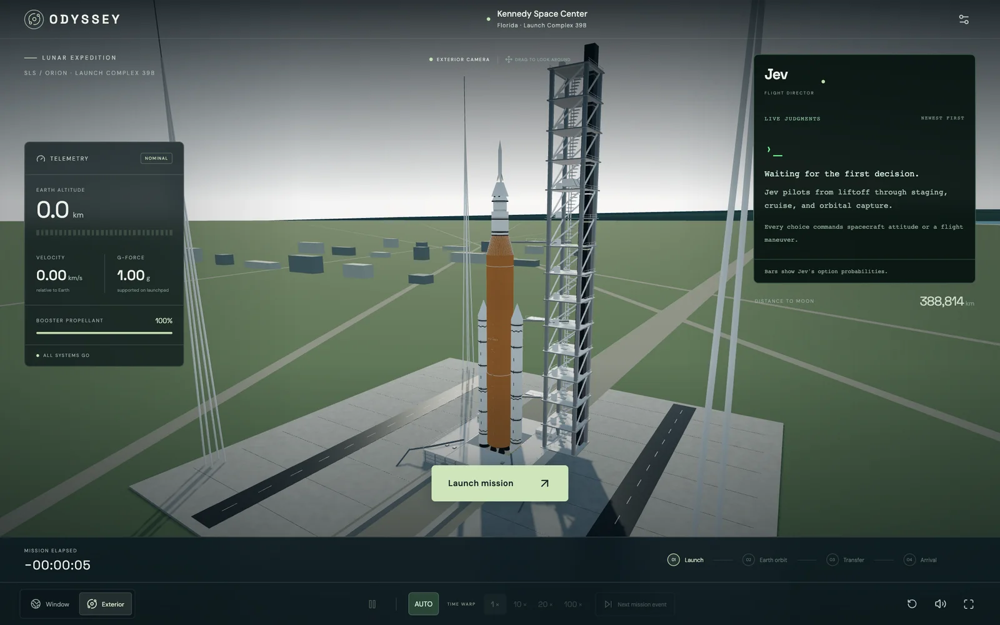

このUIがしていること
1回きりの分類ではなく、状態を読み、操縦を選び、実行し、テレメトリが変わり、また状態を読む、という循環が続く。判断の履歴が残るため、いまの機体の動きがどの選択から来たのかをたどれる。
- 判断の前から、パネルが「棒はJevの選択肢の確率」と説明している。数値の意味を先に伝えている。
- 調査時の記録では、54%対46%という僅差の選択に、confidence 0.09が添えられていた。確率とconfidenceが別の値として表示されている。
- 一時停止、視点の切り替え、時間の加速、次の行程への移動がある。利用者は操縦そのものではなく、観察の仕方を操作する。
- 低いconfidenceのときに実行を止める仕組みがあるかは確認していない。調査時の記録では、confidence 0.09でも選択は実行に移っている。
キャプチャ
{kind=link}

（原寸の画像を開く）見る箇所右の「Jev / FLIGHT DIRECTOR」パネルと「Bars show Jev's option probabilities.」の注記、左のテレメトリ、中央の「Launch mission」、下端の一時停止・AUTO・TIME WARP・Next mission event、右下の4つの行程
入力から画面の変化まで
-
判断への入力
打ち上げ後の機体の状態とテレメトリ（高度、速度、G、推進剤など）。利用者は「Launch mission」で開始し、視点、時間の進み方、次の行程への移動を操作する。
-
Jevの判断
公開画面は「Jev pilots from liftoff through staging, cruise, and orbital capture.」「Every choice commands spacecraft attitude or a flight maneuver.」と説明している。調査時の操作では、限られた操縦の候補から「Track ascent-plane alignment」が54%、「Ease…」が46%で選ばれ、confidence 0.09、498 msと表示された。
-
結果がUIをどう変えるか
「LIVE JUDGMENTS」に判断が新しい順に並び、候補ごとの確率が棒で出る。調査時の操作では、選択のあと「EXECUTING」の表示とともにロールとRCSが変わり、テレメトリと飛行経路が更新された。
- 判断型の見立て
- Choice推定
- 公開画面は「Bars show Jev's option probabilities.」と説明しており、候補ごとの確率が出ることからChoiceと見立てた。質問型は画面に明記されていない。
Jevとの適合
数値の状態から、限られた操縦の候補を短い間隔で選び続ける使い方は、Jevの低遅延に合う。一方で、選択が妥当かどうかはシミュレーションの中でしか評価できず、実機の制御へ一般化できる根拠はない。
確認範囲と未確認事項
作者の投稿と公開サイトを確認。掲載した画面は公開サイトを開いた直後の状態で、判断が出る前のもの。判断中の数値は調査時の操作記録によるもので、この画面には写っていない。シミュレーションであり、実際の飛行制御ではない。
- 確認済み公開サイトの初期画面（Jevパネルの説明文、テレメトリ、開始ボタン、時間と視点の操作、4つの行程）、作者の投稿。判断中の数値（54%／46%、confidence 0.09、498 ms、EXECUTING）は2026-09-21の調査時の操作記録による
- 未検証操縦の候補の全体、質問文と型、低いconfidenceのときの扱い、月到達までの全行程、選択の妥当性、ソースコード
- 推定扱い質問型（Choiceと見立て）。候補ごとの確率が棒で出るという説明からの見立て
- 引用公開サイト画面を2026-09-21に必要範囲で取得。権利は作者に帰属する